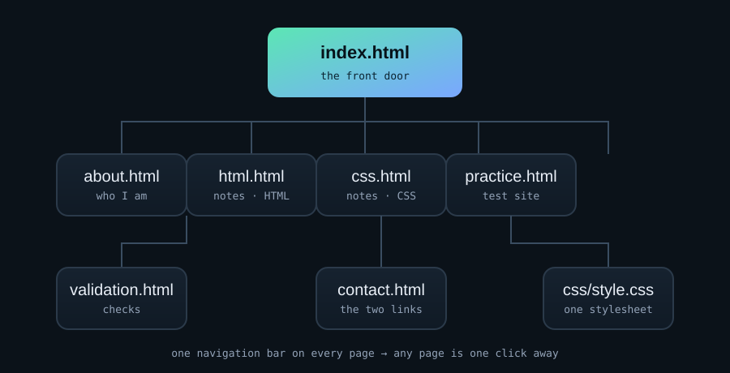

HTML notes
What HTML is, elements and attributes, the document skeleton, the three meta tags in the head, headings and paragraphs, lists, links and navigation, images, semantic sections.
Open the notesThe assignment is Self study + your test site: study the HTML and CSS material on my own, then build a site that proves it. Everything here is written by hand in HTML and CSS only — no JavaScript, no framework, no site generator and no template. The pages below are my notes and my test site.
Digital Services student · studying in Chengdu
Every page shares the same header and footer, so each page can reach all the others. Try the bar at the top.

What HTML is, elements and attributes, the document skeleton, the three meta tags in the head, headings and paragraphs, lists, links and navigation, images, semantic sections.
Open the notesWhat CSS is, three ways to include it, selectors, cascade and inheritance, the box model, colour and background, typography, Flex and Grid, responsive design, transitions, custom properties.
Open the notesEverything from the notes used once: hover cards, CSS-only tabs, progress bars, shapes drawn with CSS, a gallery, a data table and an accordion.
Go and practiseEvery item in the course syllabus, mapped to the page that puts it into practice.
| Course topic | Content | Where it lives | Status |
|---|---|---|---|
| 1. STUDY · Introduction to HTML | What HTML is, elements, tags, attributes | HTML notes · section 1 | done |
| 1. DO · Add headings and paragraphs | Document skeleton, charset, title, h1, p | HTML notes · section 4 | done |
| 2. STUDY · What is CSS and how to use it | Selectors, declarations, three ways to include CSS | CSS notes · sections 1–3 | done |
| 2. DO · Add colour and style | Colours, backgrounds, typography | CSS notes · sections 6–7 | done |
| 3. STUDY · HTML elements | Headings, paragraphs, lists, tables, images | HTML notes · sections 5–6 | done |
| 3. DO · Add content and organize it | Several pages, shared header and footer, a table | This page and the table | done |
| 4. STUDY · HTML links and navigation | <a>, relative paths, page anchors |
HTML notes · section 7 | done |
| 4. DO · Check your links, modify your navigation | Every link clicked, one bar everywhere, current page marked | About plus the bar on top of every page | done |
| 5. STUDY · More about styling | Box model, Flex, Grid, custom properties | CSS notes · sections 5, 8, 11 | done |
| 5. DO · Add more styling elements | Transitions, keyframe animation, shadows, shapes | Practice page | done |
| 6. STUDY · Images | img, alt, relative paths, figure |
HTML notes · section 8 | done |
| 6. DO · Add images to your pages | A figure on every page, all SVG, total under 40 kB | Every page of this site | done |
| 7. STUDY · Responsiveness | Viewport tag, relative units, media queries | CSS notes · section 9 | done |
| 7. DO · Responsive web pages | Breakpoints at 940 px and 700 px | Practice page, this page | done |
| 8. STUDY and DO · Validation, testing, accessibility | W3C validator, link check, accessibility review | Validation page | done |
| 9. STUDY and DO · Comment your code | HTML comments per section, numbered CSS sections | View source of any page, or the notes on commenting | done |
| My GitHub site (the graded task) | Publish on GitHub Pages, submit two links | Contact · the two links | done |
Six steps, in the order I did them.
Version one was a single index.html: charset, viewport and title in the
head, one h1 and one p in the body. Success meant the browser
opened it without a blank screen.
header, nav, main, section,
footer instead of a pile of div. This is what made the CSS
bearable later, and it made the code readable for anyone else.
Once the navigation existed, adding a page was mostly copy, paste and change the middle. The link order in the header is identical on all six pages, on purpose.
I started with a <style> block, then moved everything into
css/style.css and linked it. Change one colour, all six pages change. That
is the whole argument for separating structure and style.
--accent, --ink, --radius in :root,
then var(--accent) everywhere. Recolouring the site became a one-line edit
instead of a search-and-replace.
Drag the window down to phone width and use @media to turn three columns into
one and let the navigation wrap. Without this step the site only works on a laptop.
The brief: build a website yourself, publish it on GitHub, then submit two links — one to the code repository and one to the first published page. JavaScript and complex code are not part of it.